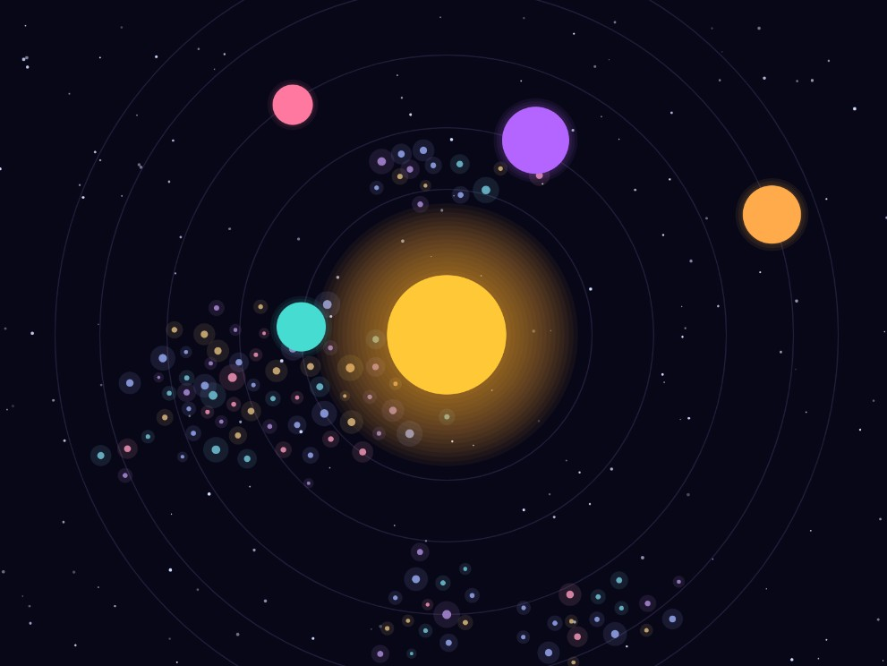
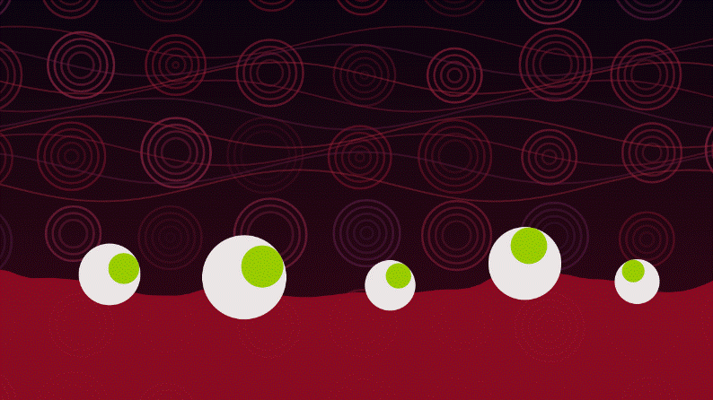
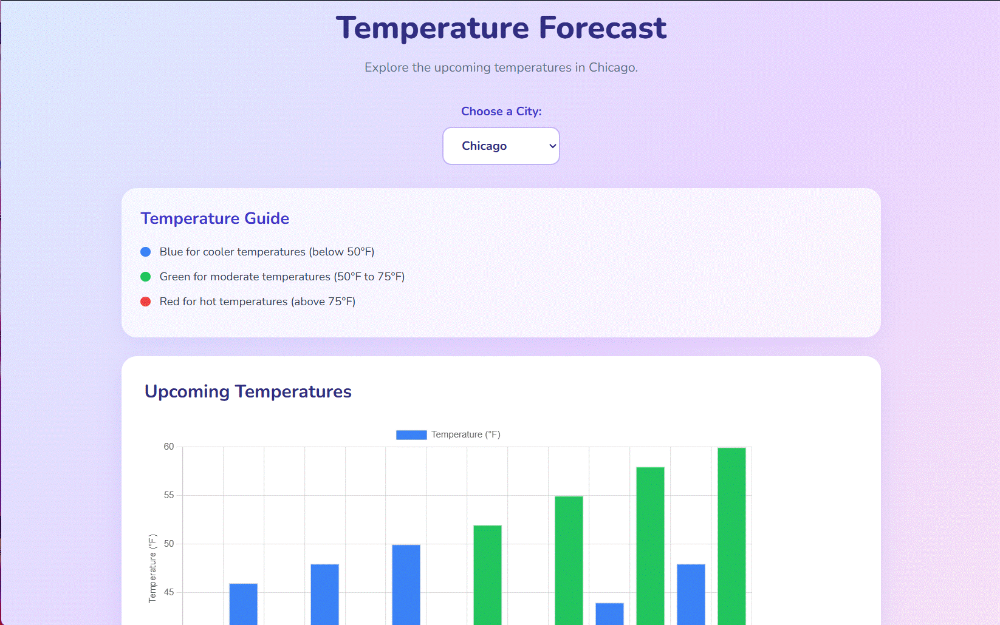
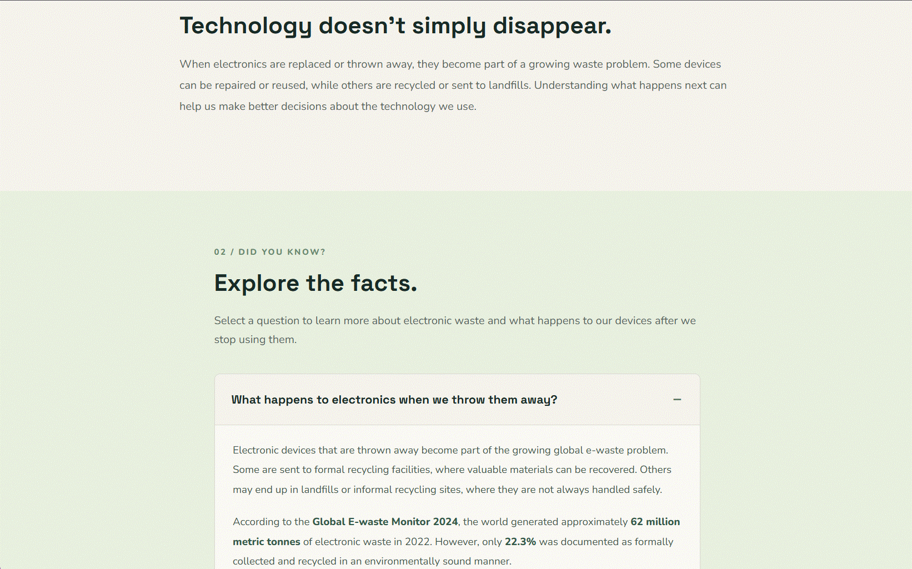

Examples of Code Assignments
Welcome to my coding examples! This page showcases projects and assignments I have completed throughout the semester. Each project represents something new I have learned, from programming fundamentals and interactive animations to designing websites using HTML, CSS, and JavaScript.
Semester Project

Description of my semester project will go here. I will explain the purpose of the project, what I created, and the coding skills and techniques I used.
Assignments
Assignment 1: Space Scene – Classes and Objects

This project is an animated solar system created using p5.js as practice with classes and objects. It features orbiting planets, a pulsing sun, twinkling background stars, and a moving flock of asteroids.
I used classes and constructor arguments to give each planet and asteroid its own properties, movement, and appearance. I also practiced working with arrays of objects and loops to manage multiple animated elements. Clicking anywhere on the canvas creates additional asteroids, making the scene interactive.
Skills and Concepts: JavaScript, p5.js, classes, objects, constructors, arrays, loops, vectors, animation, and flocking behavior.
Assignment 2: Eyeball River – Arrays and Functions

For this assignment, I created an interactive animated scene featuring eyeballs floating on a river of red water. The eyes follow the mouse as it moves around the screen, while moving wave lines and circles create activity in the background.
This project helped me practice using arrays and functions in Processing/p5.js. I used arrays to organize and manage multiple visual elements, and functions to separate parts of the animation into reusable sections. This made it easier to organize the code and control different elements of the scene.
Skills and Concepts: JavaScript, p5.js, arrays, indexing, iteration, functions, modularity, reusability, return types, mouse interaction, and animation.
Assignment 3: Temperature Forecast – JavaScript Data Visualization

For this assignment, I created an interactive weather visualization that displays upcoming temperature forecasts for different cities. The website allows users to choose between Chicago, New York, and Los Angeles using a dropdown menu. When a different city is selected, the chart updates to display that area's forecast.
I used the National Weather Service API to retrieve real weather forecast data and Chart.js to display the information as a bar chart. I also added a color guide to help users understand the temperatures, with blue representing cooler weather, green representing moderate temperatures, and red representing hotter temperatures.
This assignment helped me practice working with external APIs, retrieving data with JavaScript, organizing information into arrays, and creating interactive visualizations. I also practiced using HTML and CSS to design the layout and make the website easier to navigate.
Skills and Concepts: HTML, CSS, JavaScript, Chart.js, National Weather Service API, fetch requests, JSON data, arrays, functions, dropdown menus, data visualization, and responsive web design.
Assignment 4: After the Upgrade – jQuery Show/Hide Interaction

For this assignment, I created an informational website called "After the Upgrade" focused on electronic waste and the lifecycle of technology. The website presents four questions about what happens to old electronics, the benefits of repairing and reusing devices, and the environmental and health effects of electronic waste.
I used jQuery to create interactive question cards that allow visitors to click a question and reveal its answer. Clicking the same question again hides the answer, and multiple answers can remain open at the same time. I also used slide animations to make the dropdown interactions smoother.
Along with the interactive features, I used HTML to organize the website content and CSS to create its visual design, including the navigation bar, color palette, typography, question cards, and responsive layout.
Skills and Concepts: HTML, CSS, JavaScript, jQuery, event handling, element selection, show/hide effects, slideToggle animations, interactive web design, and responsive layouts.